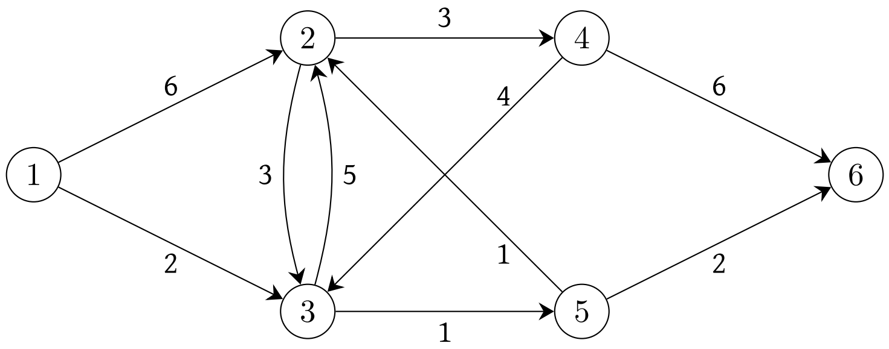
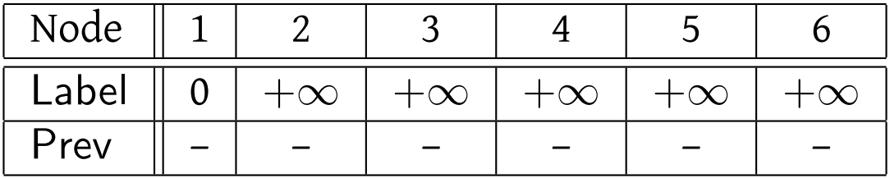
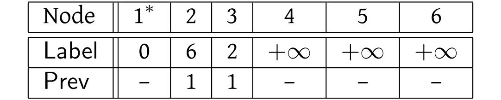
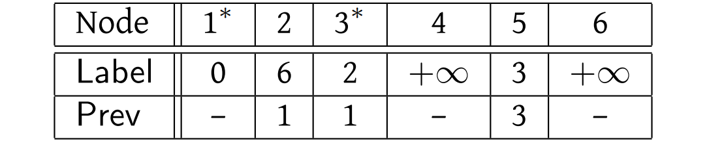
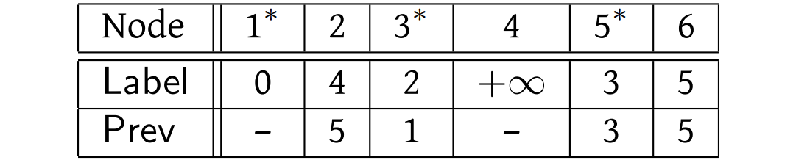
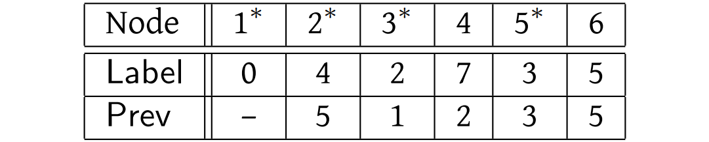
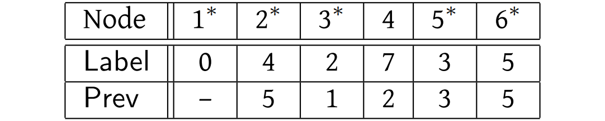
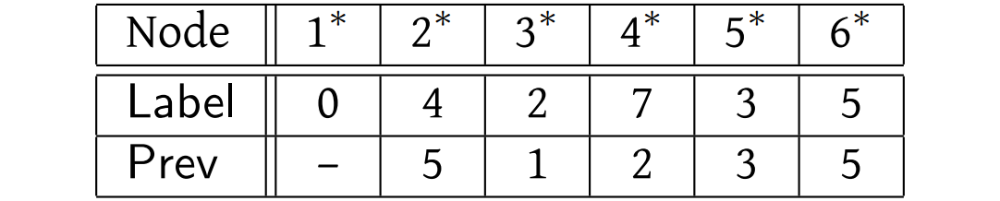

2.2. Algorithm#
Next we need an algorithm to solve this mathematical model. In this case, we will be able to give a very simple algorithm that for any input, finds an optimal solution. First think about finding a node that is closest to the source \(s\). In some trivial sense, \(s\) is the closest node to itself, so we will set \(\text{Closest}(1)=s\). Now we wish to find some other node \(i\) for which the shortest path from \(s\) to \(i\) is as short as possible. We shall call this node \(\text{Closest}(2)\). Clearly, there might be several nodes that are all the same distance from \(s\), but for at least one of these nodes \(i\), there is an arc \((s,i)\) since if you can reach \(i\) from \(s\) only by passing through some other node along the way, that other node must be at least as close to \(s\) as \(i\). (Would this still be true if an arc could have a negative length?) So \(\text{Closest}(2)\) can be identified by considering all arcs of the form \((s,i)\); let \((s,i^*)\) be the arc leaving \(s\) that is shortest. Then \(\text{Closest}(2) = i^*\), and the shortest path from \(s\) to \(i^*\) consists of the single arc \((s,i^*)\). Next consider finding the node that is next closest to \(s\) (counting ties, so it might be just as close as \(\text{Closest}(2)\)). The shortest path might be just one arc from \(s\), or it might first pass through \(\text{Closest}(2)\) before reaching the node. By considering all of the paths of this form, we can identify the next closest node, \(\text{Closest}(3)\). We can continue in this way until we have assigned each node to be \(\text{Closest}(j)\) for some \(j=1,\ldots,n\). At each stage, we know that the shortest path to \(\text{Closest}(j)\) must consist of the shortest path to \(\text{Closest}(i)\), for some \(i=1,\ldots,j-1\), and then one arc from \(\text{Closest}(i)\) to \(\text{Closest}(j)\).
We will now describe the algorithm to compute the shortest path from \(s\) to each other node in the graph in a more formal way. The fact that the algorithm always finds the correct solution is a direct consequence of the previous discussion. Since this algorithm was first proposed by E. Dijkstra, it is commonly called Dijkstra’s algorithm.
Algorithm 2.1 (Dijkstra’s algorithm)
(Initialize) Set \(\text{Label}(s)\leftarrow 0\), and \(\text{Label}(i)\leftarrow + \infty\) for all other nodes \(i\) in \(N\). Set \(j\leftarrow 0\).
Let \(\text{Prev}(i)\) be undefined for each node \(i\) in \(N\); all
nodes are unmarked.
(Main Loop) Until all nodes are marked with a \(*\), do the following:
Set \(j\leftarrow j+1\);
Among all unmarked nodes, select a node \(i\) for which the label is minimum;
Mark node \(i\) with a \(*\); set \(\text{Closest}(j)\leftarrow i\);
For each arc of the form \((i,j)\), or in other words, for each arc leaving node \(i\), compare \(\text{Label}(j)\) with \(\text{Label}(i)+ \ell(i,j)\); if the latter is smaller, then set \(\text{Label}(j) \leftarrow \text{Label}(i) + \ell(i,j)\), and set \(\text{Prev}(j)\leftarrow i\).
(Note: in fact, it suffices to consider all arcs leaving \(i\) that go to unmarked nodes \(j\).)
It is not clear that, when this algorithm finishes, you have computed any path from \(s\) to each other node, let alone a shortest path for each of these nodes. Let us first run Dijkstra’s algorithm on the example in Figure 2.4, where node 1 is the specified source.
{kind=link}
Initialization:
{kind=link}
Clearly, node 1 is the one to be marked, that is, \(i=1\). There are two arcs leaving node 1: \((1,2)\) and \((1,3)\). Since \(\text{Label}(2)=+\infty\), \(\text{Label}(1)=0\), and \(\ell(1,2)=6\), it follows that we should update \(\text{Label}(2)=6\) and \(\text{Prev}(2)=1\). This can be interpreted as follows: we have found a shorter path to node 2 that is taking the shortest path to node 1 (which is no path at all) and then taking arc \((1,2)\). Since the node previous to 2 in this path is node 1, we have set \(\text{Prev}(2)=1\). Similarly, we set \(\text{Label}(3)=2\), and \(\text{Prev}(3)=1\).
After the first iteration of the main loop:
{kind=link}
Now node 3 is the next one to be marked. There are arcs leaving 3 to nodes 2 and 5. For the first of these, \(\text{Label}(2)=6\) whereas \(\text{Label}(3)+\ell(3,2)=2+5=7\), so we leave \(\text{Label}(2)\) unchanged; we did not find an improved path to node 2. For node 5, we set \(\text{Label}(5)=3\) and \(\text{Prev}(5)=3\). As above, this means that the best path we have found from 1 to 5 consists of taking the best path that we have found from 1 to 3 (which consists of just the arc \((1,3)\)) and then arc \((3,5)\).
After the second iteration of the main loop:
{kind=link}
Now node 5 is the next node to be marked. There are two arcs leaving node 5, to nodes 2 and 6. In the former case, we discover a path of length 3+1=4 to node 2, so we set \(\text{Label}(2)=4\) and \(\text{Prev}(2)=5\). For the latter, we set \(\text{Label}(6)=3+2=5\) and \(\text{Prev}(6)=5\).
After the third iteration of the main loop:
{kind=link}
Check that you get the results tabulated below for the remainder of the execution of the algorithm on this graph. The only point to mention is that in processing the arcs leaving node 2 (the next marked node) we need only consider the arc \((2,4)\), since the arc \((2,3)\) leads to a node that is already marked.
After the fourth iteration of the main loop:
{kind=link}
After the fifth iteration of the main loop:
{kind=link}
And finally, after the sixth iteration of the main loop:
{kind=link}
By now it should be clear how to deduce the shortest paths from this information. Take node 4, for example. We get there by coming from \(\text{Prev}(4)=2\). But how do we get to node 2? From node \(\text{Prev}(2)=5\). And we get to node 5 from node \(\text{Prev}(5)=3\). And we get to node 3 from node \(\text{Prev}(3)=1\), which is the source. (We can detect that we have traced back to the source by the fact that its \(\text{Prev}(\cdot)\) value is still undefined.) So the shortest path from node 1 to node 4 is \((1,3), (3,5), (5,2), (2, 4)\).
While we can perform this tracing back each time we wish to determine a shortest path, we can also give a nice way to concisely describe all of the shortest paths. For each node \(i\) that is not the source, highlight the arc from \(\text{Prev}(i)\) to \(i\). This is done for our example in the figure below.
{kind=link}
Fig. 2.5 Shortest path tree#
This collection of arcs is called the shortest path tree. With an active imagination (and turning your head 90 degrees clockwise), you can think of this as a tree growing up from the source node. Its importance should be clear. For each node \(i\) we have highlighted the shortest path from 1 to \(i\).
Note
The solution to the shortest path problem can be summarized by a shortest path tree. The unique path from \(s\) to \(i\) in this tree is exactly the shortest path from \(s\) to \(i\) in the input graph, for every node \(i\in N\).